Cubic Spline Interpolation
This demo illustrates how to use the csapi and csape commands from Curve Fitting Toolbox™ to construct cubic spline interpolants.
Contents
- The CSAPI Command
- How to Check the Output of CSAPI
- Example: The Truncated Power Function
- The Interpolation Error
- A Truncated Power That Cannot be Reproduced
- Using the ppform Instead of Values
- Example: Differentiating and Integrating the Interpolant
- The CSAPE Command
- Other End Conditions: The `Natural' Spline Interpolant
- Other End Conditions: Prescribing Second Derivatives
- Other End Conditions: Prescribing Slopes
- Other End Conditions: Mixed End Conditions
- Other End Conditions: Periodic Conditions
- End Conditions Not Explicitly Covered by CSAPI or CSAPE
The CSAPI Command
The command
values = csapi(x,y,xx)
returns the values at xx of the cubic spline interpolant to the given data (x,y), using the not-a-knot end condition. This interpolant is a piecewise cubic function, with break sequence x, whose cubic pieces join together to form a function with two continuous derivatives. The "not-a-knot" end condition means that, at the first and last interior break, even the third derivative is continuous (up to round-off error).
Specifying only two data points results in a straight line interpolant.
x = [0 1]; y = [2 0]; xx = linspace(0,6,121); plot(xx,csapi(x,y,xx),'k-',x,y,'ro') title('Interpolant to Two Points')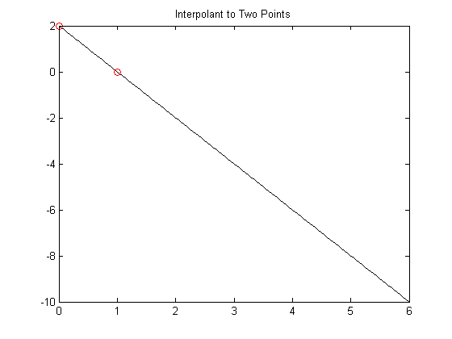
Specifying three data points gives a parabola.
x = [2 3 5]; y = [1 0 4]; plot(xx,csapi(x,y,xx),'k-',x,y,'ro') title('Interpolant to Three Points')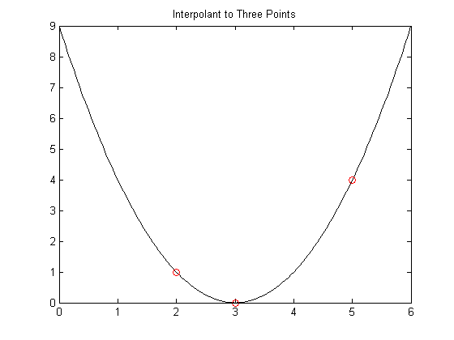
More generally, four or more data points give a cubic spline.
x = [1 1.5 2 4.1 5]; y = [1 -1 1 -1 1]; plot(xx,csapi(x,y,xx),'k-',x,y,'ro') title('Cubic Spline Interpolant to Five Points')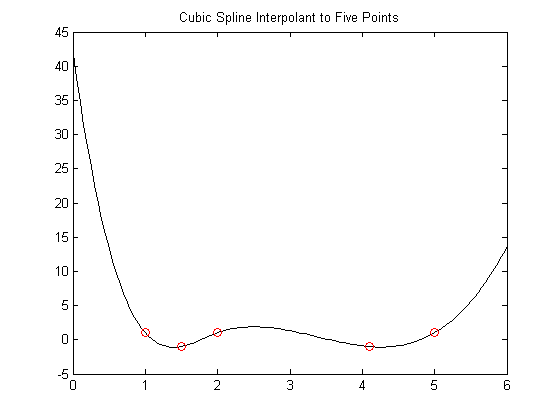
How to Check the Output of CSAPI
These look like nice interpolants, but how do we check that csapi performs as advertised?
We already saw that csapi interpolates, because we plotted the data points and the interpolant went right through those points. But to be sure that we get a cubic spline, it is best to start with data from a cubic spline of the expected sort and check whether csapi reproduces that cubic spline, i.e., gives back that cubic spline from which the data were taken.
Example: The Truncated Power Function
One simple example of a cubic spline function to check against is the truncated third power, i.e., the function
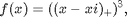
where xi is one of the breaks and the "+" subscript indicates the truncation function, provided by the command subplus:
help subplus
SUBPLUS Positive part.
x , if x>=0
y = subplus(x) := (x)_{+} = ,
0 , if x<=0
returns the positive part of X. Used for computing truncated powers.
Reference page in Help browser
doc subplus
The truncated 3rd power is plotted below for the particular choice xi = 2. As expected, it is zero to the left of 2, and rises like (x-2)^3 to the right of 2.
plot(xx, subplus(xx-2).^3,'y','LineWidth',3) axis([0,6,-10,70])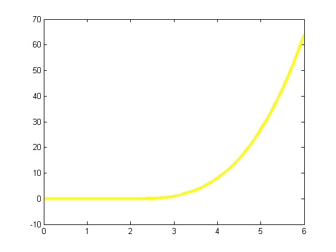
Now we interpolate this particular cubic spline at the data sites 0:6, and plot the interpolant on top of the spline, in black.
x = 0:6; y = subplus(x-2).^3; values = csapi(x,y,xx); hold on plot(xx,values,'k',x,y,'ro') hold off title('Interpolant to ((x-2)_+)^3')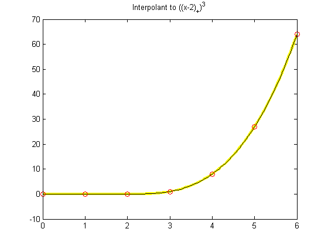
The Interpolation Error
When comparing two functions, it is usually much more informative to plot their difference.
plot(xx, values - subplus(xx-2).^3)
title('Error in Cubic Spline Interpolation to ((x-2)_+)^3')
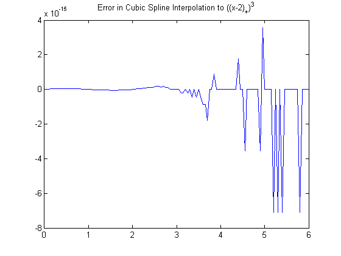 To put the size of their difference into context, you can also compute the maximum data value. This shows the error to be no worse than the inevitable round-off.
max_y = max(abs(y))
max_y =
64
A Truncated Power That Cannot be Reproduced
As a further test, we interpolate a truncated power whose csapi-produced interpolant at the sites 0:6 cannot coincide with it. For example, the first interior break of the interpolating spline is not really a knot since csapi uses the "not-a-knot" condition, hence the interpolant has three continuous derivatives at that site. This implies that we should not be able to reproduce the truncated 3rd power centered at that site since its third derivative is discontinuous across that site.
values = csapi(x,subplus(x-1).^3,xx);
plot(xx, values - subplus(xx-1).^3)
title('Error in Not-a-Knot Interpolant to ((x-1)_+)^3')
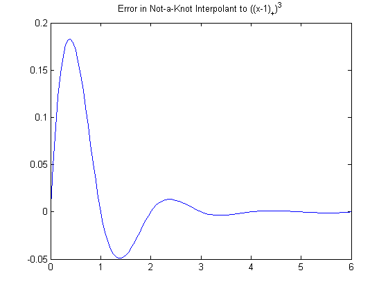 Since 1 is a first interior knot, it is not active for this interpolant.
The difference is as large as .18, but decays rapidly as we move away from 1. This illustrates that cubic spline interpolation is essentially local.
Using the ppform Instead of Values
It is possible to retain the interpolating cubic spline in a form suitable for subsequent evaluation, or for calculating its derivatives, or for other manipulations. This is done by calling csapi in the form
pp = csapi(x,y)
which returns the ppform of the interpolant. You can evaluate this form at some new points xx by the command
values = fnval(pp,xx)
You can differentiate the interpolant by the command
dpp = fnder(pp)
or integrate it by the command
ipp = fnint(pp)
which return the ppform of the derivative or the integral, respectively.
Example: Differentiating and Integrating the Interpolant
To demonstrate differentiation of an interpolant, we plot the derivative of this truncated power
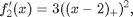
(again in yellow) and then, on top of it, the derivative of our interpolant to the original truncated third power function (again in black).
plot(xx,3*subplus(xx-2).^2,'y','LineWidth',3) pp = csapi(x,subplus(x-2).^3); dpp = fnder(pp); hold on plot(xx,fnval(dpp,xx),'k') hold off title('Derivative of Interpolant to ((x-2)_+)^3')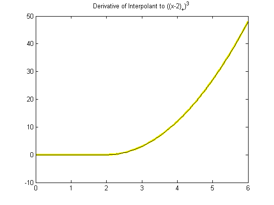
Again, the more informative comparison is to plot their difference, and as before this is no bigger than round-off.
plot(xx, fnval(dpp,xx) - 3*subplus(xx-2).^2)
title('Error in Derivative of interpolant to ((x-2)_+)^3')
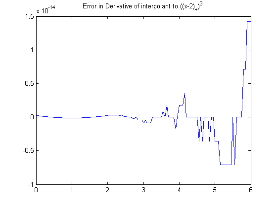 The second derivative of the truncated power is
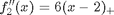
A plot of the difference between this function and the second derivative of the interpolant to the original function shows that there are now jumps, but they are still within roundoff.
ddpp = fnder(dpp);
plot(xx, fnval(ddpp,xx) - 6*subplus(xx-2))
title('Error in Second Derivative of Interpolant to ((x-2)_+)^3')
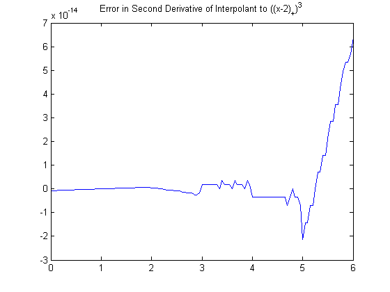 The integral of the truncated power is
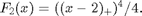
A plot of the difference between this function and the integral of the interpolant to the original function again shows that the errors are within round-off.
ipp = fnint(pp);
plot(xx, fnval(ipp,xx) - subplus(xx-2).^4/4)
title('Error in Integral of Interpolant to ((x-2)_+)^3')
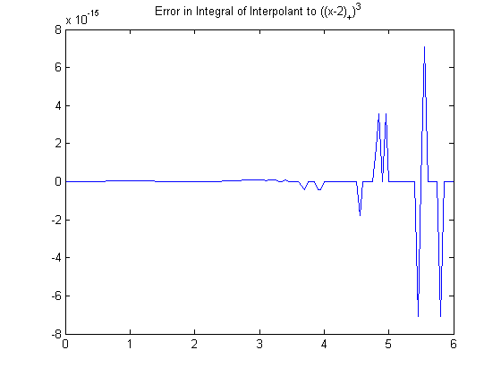 The CSAPE Command
Like csapi, the csape command provides a cubic spline interpolant to given data. However, it permits various additional end conditions. Its simplest version,
pp = csape(x,y)
uses the Lagrange end condition, which is a common alternative to the not-a-knot condition used by csapi. csape does not directly return values of the interpolant, but only its ppform.
For example, consider again interpolation to the function
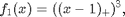
which csapi fails to reproduce well. We plot the error of the not-a-knot interpolant returned by csapi (in black), along with the error of the interpolant obtained from csape (in red).
exact = subplus(xx-1).^3; plot(xx, fnval(csapi(x,subplus(x-1).^3),xx) - exact,'k') hold on plot(xx, fnval(csape(x,subplus(x-1).^3),xx) - exact,'r') title('Error in Not-a-Knot vs. Lagrange End Conditions') legend({'Not-a-Knot' 'Lagrange'}); hold off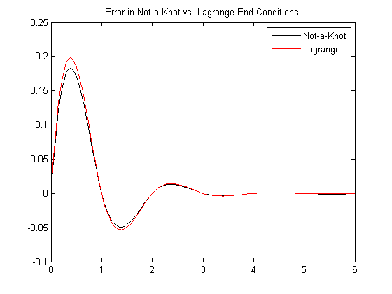
There is not much difference between the two interpolants in this case.
Other End Conditions: The `Natural' Spline Interpolant
The csape command also provides ways to specify several other types of end conditions for an interpolating cubic spline. For example, the command
pp = csape(x,y,'variational')
uses the so-called `natural' end conditions. This means that the second derivative is zero at the two extreme breaks.
To demonstrate, we apply `natural' cubic spline interpolation to the function
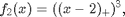
and plot the error. The code below computes the `natural' spline interpolant with an alternative argument syntax that is equivalent to the 'variational' string argument: using the string 'second' specifies that csape should set the second derivative at the extreme data sites to the default value of 0.
pp = csape(x,subplus(x-2).^3,'second'); plot(xx, fnval(pp,xx) - subplus(xx-2).^3) title('Error in ''Natural'' Spline Interpolation to ((x-2)_+)^3')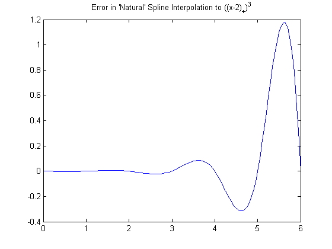
Note the large error near the right end. This is due to the fact that the 'natural' end conditions implicitly insist on having a zero second derivative there.
Other End Conditions: Prescribing Second Derivatives
We can also explicitly use the correct second derivatives to get a small error. First, we compute the correct second derivative values of the truncated power at the endpoints.
endcond = 6*subplus(x([1 end])-2);
Then we create the interpolant, specifying that second derivatives at the endpoints are to be matched to the second derivative values we just computed. We do this by providing endcond(1) for the left endpoint condition, and endcond(2) for the right, along with the data values.
pp = csape(x,[endcond(1) subplus(x-2).^3 endcond(2)], 'second'); plot(xx, fnval(pp,xx) - subplus(xx-2).^3,'r') title(['Error in Spline Interpolation to ((x-1)_+)^3'; ... ' When Matching the 2nd Derivative at Ends '])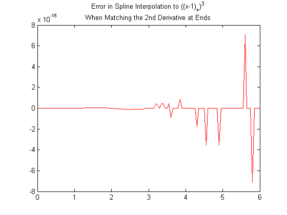
Other End Conditions: Prescribing Slopes
csape also permits specification of endpoint slopes. This is the clamped (or, complete) cubic spline interpolant. The statement
pp = csape(x,[sl,y,sr],'clamped')
creates the cubic spline interpolant to the data (x, y) that also has slope sl at the leftmost data site and slope sr at the rightmost data site.
Other End Conditions: Mixed End Conditions
It is even possible to mix these conditions. For example, our much-exercised truncated power function
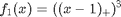
has slope 0 at x=0 and second derivative 30 at x=6 (the last data site).
Therefore, by matching the slope at the left end and the curvature at the right, we expect no error in the resulting interpolant.
pp = csape(x, [0 subplus(x-1).^3 30], [1 2]); plot(xx, fnval(pp,xx) - subplus(xx-1).^3) title(['Error in Spline Interpolation to ((x-1)_+)^3'; ... ' with Mixed End Conditions. '])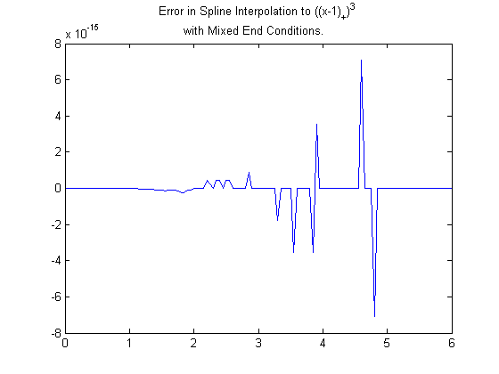
Other End Conditions: Periodic Conditions
It is also possible to prescribe periodic end conditions. For example, the sine function is 2*pi-periodic and has the values [0 -1 0 1 0] at the sites (pi/2)*(-2:2). The difference, between the sine function and its periodic cubic spline interpolant at these sites, is only 2 percent. Not bad.
x = (pi/2)*(-2:2); y = [0 -1 0 1 0]; pp = csape(x,y, 'periodic' ); xx = linspace(-pi,pi,201); plot(xx, sin(xx) - fnval(pp,xx), 'x') title('Error in Periodic Cubic Spline Interpolation to sin(x)')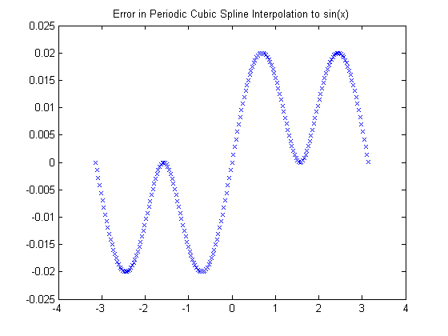
End Conditions Not Explicitly Covered by CSAPI or CSAPE
Any end condition not covered explicitly by csapi or csape can be handled by constructing the interpolant with the csape default side conditions, and then adding to it an appropriate scalar multiple of an interpolant to zero values and some side conditions. If there are two `nonstandard' side conditions to be satisfied, you may have to solve a 2-by-2 linear system first.
For example, suppose that you want to compute the cubic spline interpolant s to the data
x = 0:.25:3; q = @(x) x.*(-1 + x.*(-1+x.*x/5)); y = q(x);
and enforce the condition
lambda(s) := a * (Ds)(e) + b * (D^2 s)(e) = c
on the first and second derivatives of s at the point e.
The data were generated from a quartic polynomial that happens to satisfy this side condition with specific parameters
e = x(1); a = 2; b = -3; c = 4;
To construct the interpolant that satisfies this specific condition, we first construct the interpolant with the default end conditions
pp1 = csape(x,y);
and the first derivative of its first polynomial piece.
dp1 = fnder(fnbrk(pp1,1));
In addition, we construct the cubic spline interpolant to zero data values, specifying that it have a slope of 1 at e,
pp0 = csape(x,[1,zeros(size(y)),0], [1,0]);
as well as constructing the first derivative of its first polynomial piece.
dp0 = fnder(fnbrk(pp0,1));
Then we compute lambda for both pp1 and pp0,
lam1 = a*fnval(dp1,e) + b*fnval(fnder(dp1),e); lam0 = a*fnval(dp0,e) + b*fnval(fnder(dp0),e);
and construct the correct linear combination of pp1 and pp0 to get a cubic spline
s := pp1 + ((c - lambda(pp1))/lambda(pp0)) * pp0
that does satisfy the desired condition, as well as the default end condition at the right endpoint. We form this linear combination with the help of fncmb.
s = fncmb(pp0,(c-lam1)/lam0,pp1);
A plot of the interpolation error shows that s fits the quartic polynomial slightly better near e than the interpolant pp1 with the default conditions does.
xx = (-.3):.05:.7; yy = q(xx); plot(xx, fnval(pp1,xx) - yy, 'x') hold on plot(xx, fnval(s,xx) - yy, 'o') hold off legend({'Default conditions' 'Nonstandard conditions'},'location','SE')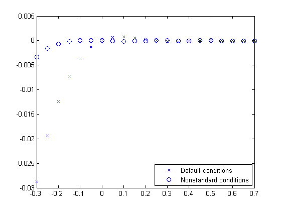
If we want to enforce the condition
mu(s) := (D^3 s)(3) = 14.6
on the third derivative of the interpolant (the quartic satisfies this condition), then we construct an additional cubic spline interpolating to zero values, and with zero first derivative at the left endpoint, hence certain to be independent from pp0.
pp2 = csape(x,[0,zeros(size(y)),1],[0,1]);
Then we find the coefficients d0 and d2 in the linear combination
s := pp1 + d0*pp0 + d2*pp2
that solves the linear system
lambda(s) = c mu(s) = 14.6
Note that both pp0 and pp2 vanish at all interpolation sites, hence s will match the given data for any choice of d0 and d2.
For amusement, we use the MATLAB® encoding facility to write a loop to compute lambda(pp_j) and mu(pp_j), for j=0:2.
dd = zeros(2,3); for j=0:2 J = num2str(j); eval(['dpp',J,'=fnder(pp',J,');']); eval(['ddpp',J,'=fnder(dpp',J,');']); eval(['dd(1,1+',J,')=a*fnval(dpp',J,',e)+b*fnval(ddpp',J,',e);']); eval(['dd(2,1+',J,')=fnval(fnder(ddpp',J,'),3);']); end
Given the values of lambda and mu for pp0, pp1, and pp2, we then solve for the coefficients that define the correct linear combination.
d = dd(:,[1,3])\([c;14.6]-dd(:,2)); s = fncmb(fncmb(pp0,d(1),pp2,d(2)),pp1); xxx = 0:.05:3; yyy = q(xxx); plot(xxx, yyy - fnval(s,xxx),'x') title('Error in Spline Interpolant to y = x*(-1 + x*(-1+x*x/5))')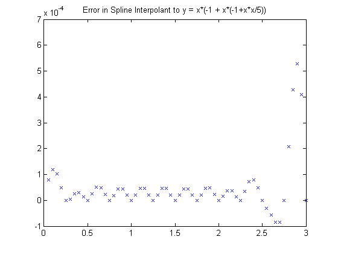
For reassurance, we compare this error with the one obtained in complete cubic spline interpolation to this function:
hold on plot(xxx, yyy - fnval(csape(x,[-1,y,-7+(4/5)*27],'clamped'),xxx),'o') hold off legend({'Nonstandard conditions' 'Endslope conditions'})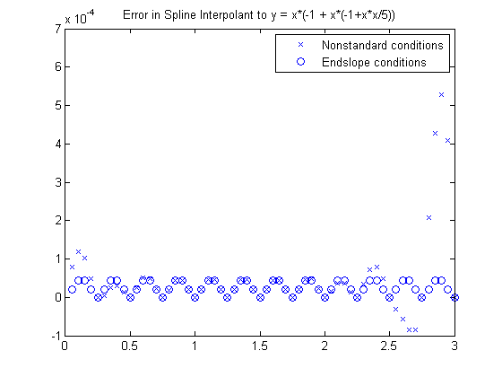
The errors differ (and not by much) only near the end points, testifying to the fact that both pp0 and pp2 are sizable only near their respective end points.
As a final check, we verify that s satisfies the desired third derivative condition at 3.
fnval(fnder(s,3),3)
ans = 14.6000